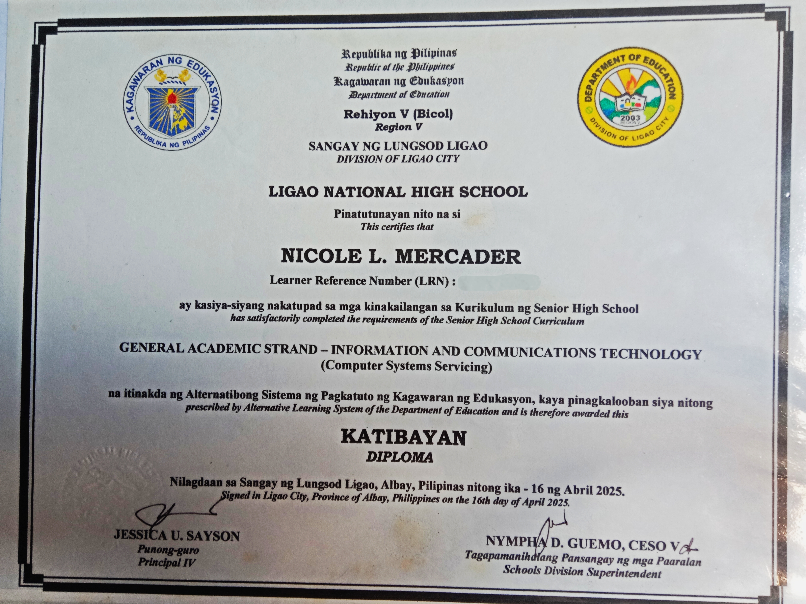
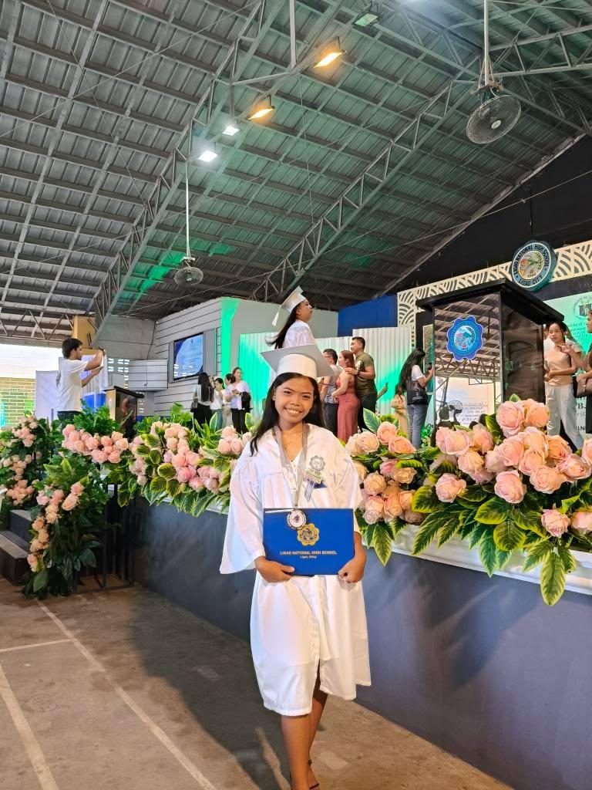
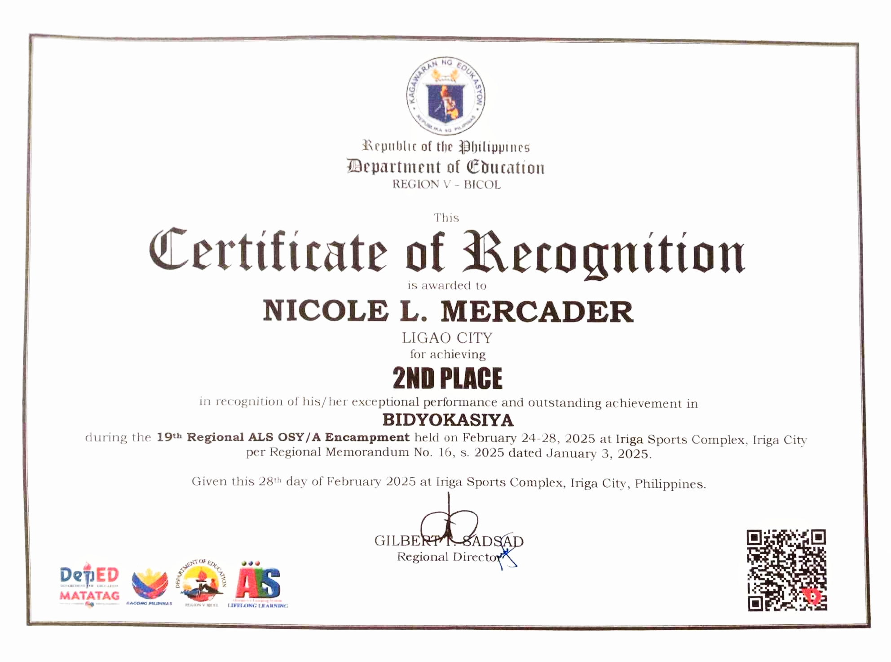
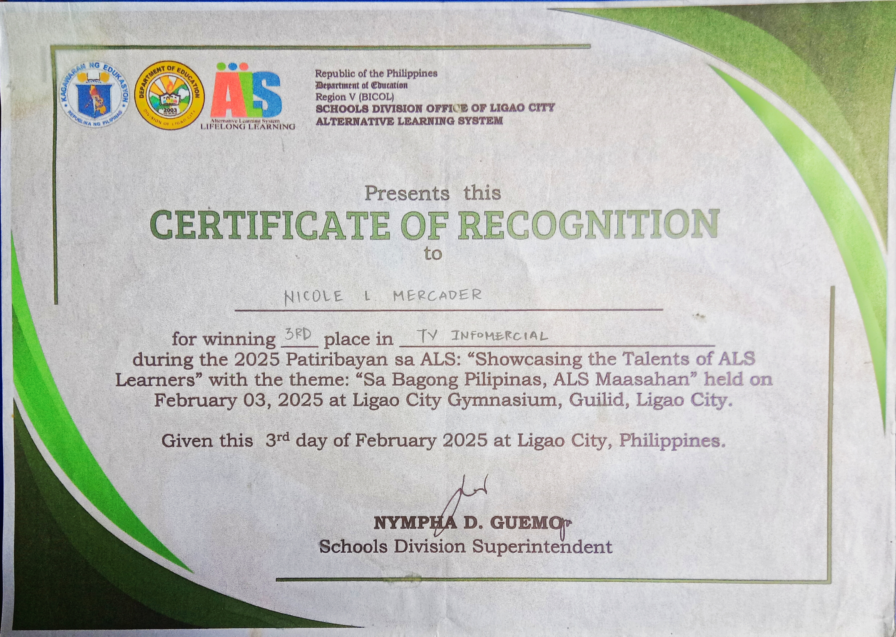
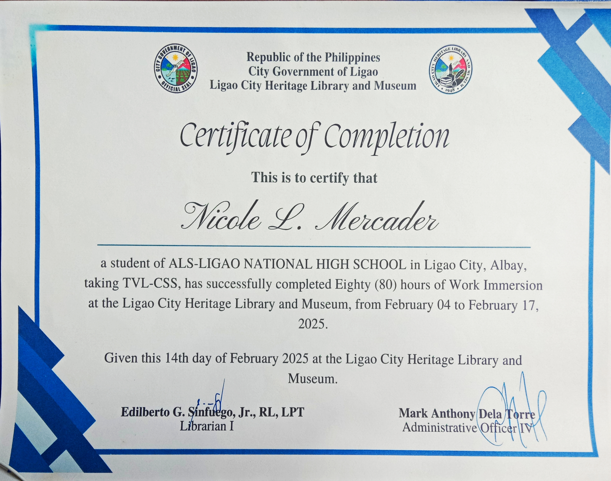
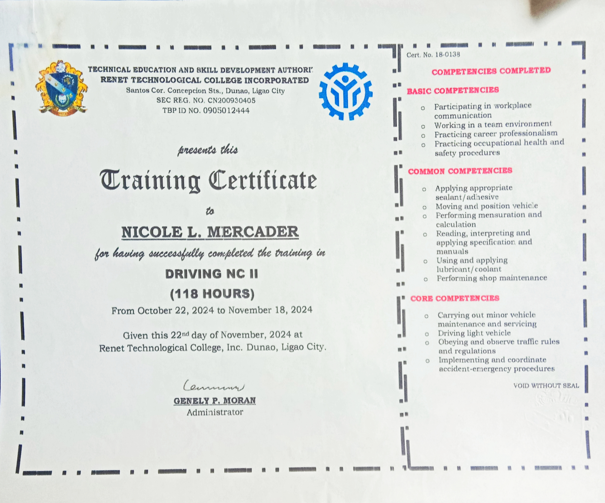
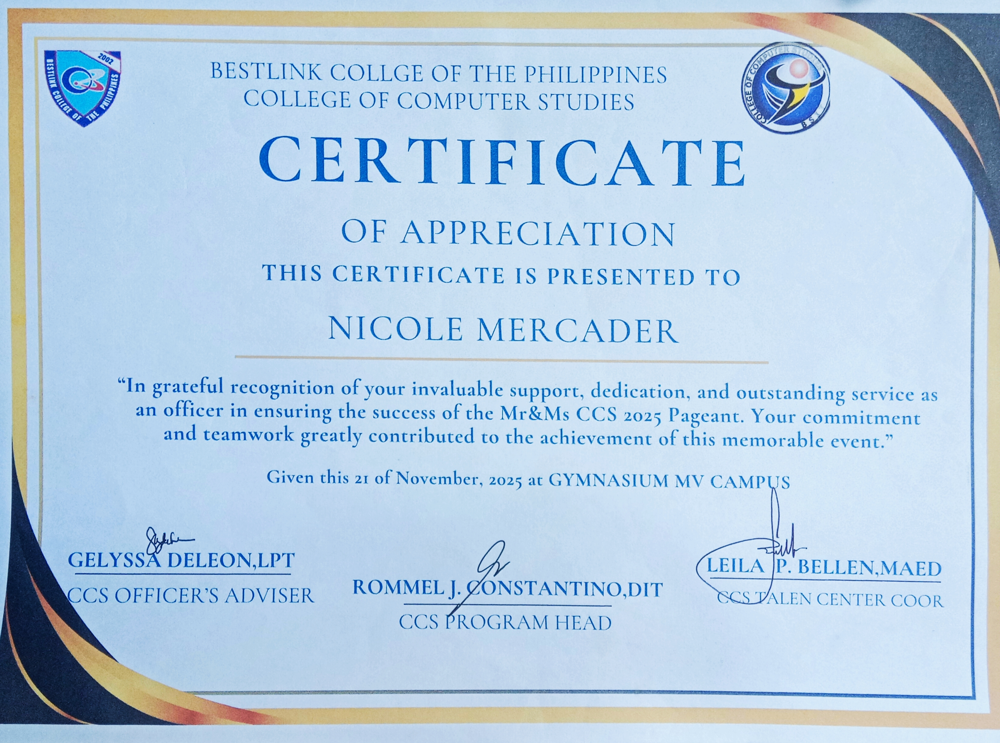
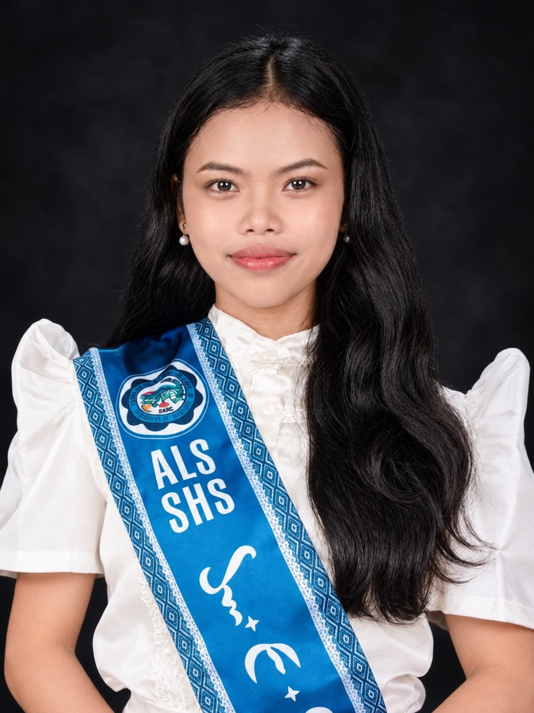

HTML
Building the structure and content of web pages.
Currently learning
WELCOME TO MY PERSONAL PORTFOLIO
I am an Information Technology student who enjoys learning about computers, technology, and website design. This portfolio presents my background, skills, projects, and achievements.

Learning new digital skills
Turning ideas into designs
Improving step by step
A LITTLE ABOUT ME
Here is a little introduction about who I am and what I want to achieve.

My name is Nicole Mercader, and I am an Information Technology student at Bestlink College of the Philippines. I am currently learning about web fundamentals and how websites are planned, created, and designed.
I believe that learning technology takes patience, practice, and curiosity. I want to continue improving my skills, explore new ideas, and gain more experience through school activities and personal projects.
Name: Nicole Mercader
School: Bestlink College of the Philippines
Field: Information Technology
Subject: IT Elective 1 - Web Fundamentals
WHAT I'M LEARNING
Skills I am practicing and developing as an IT student.
Building the structure and content of web pages.
Styling websites with colors, layouts, and spacing.
Using computers and common digital applications.
Planning page layouts and creating clear visual designs.
Breaking tasks into steps and finding practical solutions.
Sharing ideas, cooperating, and learning with others.
MY LEARNING JOURNEY
My education is helping me build the knowledge and skills I need for the future.
Studying technology and learning the fundamentals of creating websites and digital projects.
Completed Senior High School successfully in April 2025.

Completed Junior High School in July 2023.

Completed Elementary education in April 2019.

MY SCHOOL WORK
A space for school projects and activities I have worked on or plan to add.

A memorable moment from my school completion and academic journey.
Learning to organize page content and style websites with layouts, colors, and spacing.
School tasks and collaborative activities that help me develop practical skills.
MILESTONES I'M PROUD OF
Certificates, awards, training, and recognitions.

19th Regional ALS Encampment

2025 Patiribayan sa ALS

Certificate of Appreciation

Ligao City Heritage Library and Museum

Renet Technological College

Bestlink College of the Philippines
OUTSIDE THE CLASSROOM
Activities that help me relax, express creativity, and learn new things.
Discovering useful digital tools and learning how websites work.
Trying colors, layouts, and visual ideas for school and personal projects.
Enjoying music during free time and using it to relax.
Exploring topics and practicing skills that can help me grow.
LOOKING AHEAD
I want to continue growing as a student, strengthen my technology skills, and prepare for future opportunities in the IT field.

LET'S CONNECT
Thank you for taking the time to explore my portfolio.
Add your email address here
Bestlink College of the Philippines
Information Technology